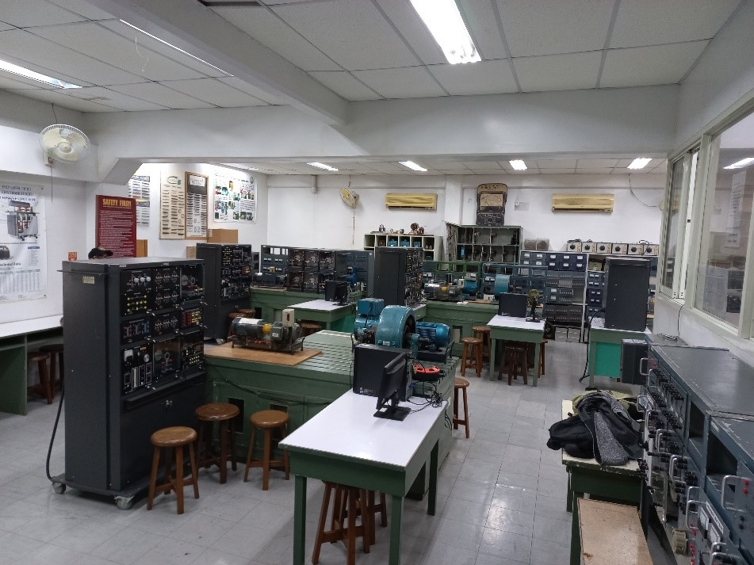
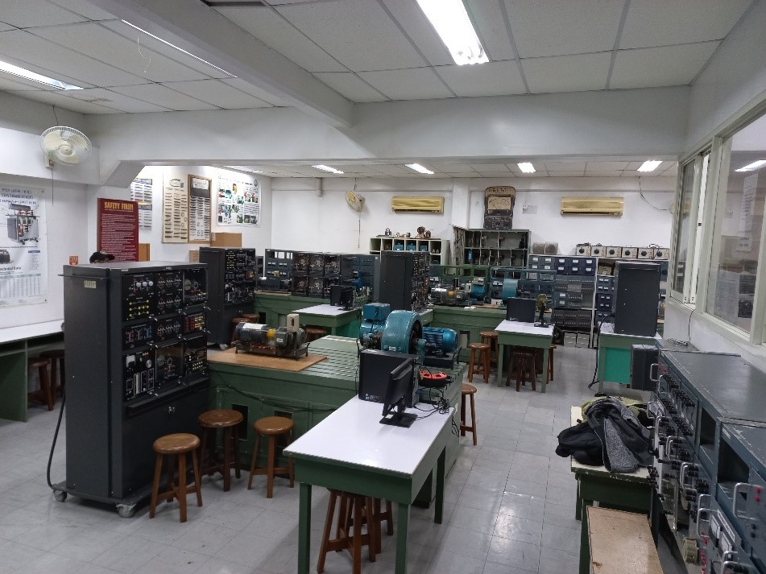

Laboratories and Facilities
 

The laboratory is equipped with equipment and trainers needed to conduct all tests and measurements to learn more about the major types of DC/AC motors and generators and single- and three-phase transformers. The training modules combine theory and application with practical skill-training techniques.
Room: M402A
Equipment: Electromechanical training systems, Motors, Generators, Transformers, Wattmers, Tachometers
The laboratory is equipped with equipment and trainers needed to conduct all tests and measurements to learn more about the major types of DC/AC motors and generators and single- and three-phase transformers. The training modules combine theory and application with practical skill-training techniques.
Room: M402B, M402C
Equipment: Electromechanical training systems, Motors, Generators, Transformers, Wattmers, Tachometers


The laboratories are equipped with basic equipment and desktop computers needed to learn the principles of basic/advanced/digital electronics and the use of basic measuring instruments such as oscilloscopes. Various electronic projects are performed in these laboratories.
Room: V303A, V303B
Equipment: Equipment: Analog Oscilloscopes, Multimeters, Logic Probes, Curve Tracers, Signal Generators, Power Supplies, Logic Trainers, PLC Trainers, Transformers

The laboratories are equipped with the latest equipment like high-end desktop computers, development boards and computer peripherals, networking equipment, projectors and thin client. Most of the experiments being conducted here are engaged in programming, interfacing, networking, design tools and other basic and advanced electronic courses.
Room: V311, V312
Equipment: Desktop Computers, Oscilloscopes, Power Supplies, Multimeters, Curve Tracers, Transformers, Modems, Routers
The laboratory is equipped with desktop computers and networking equipment needed to experiment and learn the principles of computer architecture, interfacing and networking.
Room: V401
Equipment: Desktop Computers, Interface Boards, Development Boards, Modems, Routers, Oscilloscopes, Power Supplies

The laboratories consist of advanced training systems to learn the principles of different communications systems such as analog communications and digital communications. They are also equipped with desktop computers installed with Matlab application software.
Room: V402, V404
Equipment: Analog/Digital Communications training systems, Antenna training systems, Microwave training systems, Telephone Line simulators, Desktop Computers, Digital Oscilloscopes, Spectrum Analyzers, Amplifiers, Sound Level Meters, Matlab software
Digital Signal Processing Laboratory (DSP)
Head: Prof. Dr. Edwin Sybingco
Signal processing is a subfield of electrical engineering that focuses on the acquisition, modeling, transformation, and interpretation of information. Research topics include but are not limited to image processing, graph signal processing, computer/machine vision, machine learning, network data analysis, distributed signal processing, image and video coding, biomedical signal processing, remote sensing, radar signal processing, sonar signal processing, and industrial applications.
Robotics and Industrial Automation Laboratory (RIAL)
Head: Prof. Dr. Argel Bandala
The Robotic and Industrial Automation Laboratory aims to apply dynamic systems theory to the design and construction of intelligent systems and machines targeting real world applications. Managing kinetic energy is the key foundation of the designs of the robots which enables them to perform tasks which leads to the success of the mission or goals.
Wireless Communications Engineering Laboratory (WCEL)
Head: Dr. Gerald Arada
Advanced Information Systems Laboratory (AISL)
Head: Prof. Dr. Reggie Gustilo
Microelectronics Laboratory (MICRO)
Head: Dr. Roderick Yap
This laboratory focuses on research related to Full Custom Integrated Circuit design using CMOS library for analog and/or digital applications. It also focuses on hardware modeling and FPGA Library Based designs on various digital systems.
Embedded Systems and Computer Architecture Laboratory (ESCA)
Head: Dr. Robert Jay del Rosario
Computer Networks and IoT Laboratory (CNIL)
Head: Dr. Cesar Llorente
Renewable Electric Systems Laboratory (RESL)
Head: Engr. Jose Antonio Catala